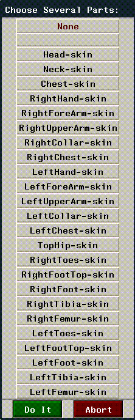

[N-World Contents] [Book Contents] [Prev] [Next] [Index]
Skeletons in N-Geometry (cont.)
Collapse
Bones, joints
When used on a bone, removes the bone from the skeleton, allowing the inferior to fill the resulting "gap."
To collapse a bone:
1. (SHIFT-L) on the bone you want to remove.
2. (CLICK-L) on Collapse.
- The bone is eliminated, and the inferior bone fills the resulting gap, as shown in Figure 2.23.
Figure 2.23 Collapsing a bone
If the bone is at the end of a limb, only that bone is eliminated-no other bones are affected.
If the selected bone is between two other bones, the bone drops out and the next inferior bone is joined where the collapsed bone used to connect.
- Note. Collapsing a bone invalidates any saved base states for the skeleton.
When used on a joint, the bone above the joint is removed and the bone inferior to the joint fills the created gap.
To collapse a joint:
1. (SHIFT-L) on the joint you want to remove.
2. (CLICK-L) on Collapse.
- The bone closer to the root is collapsed (eliminated).
Figure 2.24 When collapsing a joint, the bone closer to the root is eliminated
Copy
Skeletons
Makes a copy of the selected skeleton. Any attributes of the original skeleton are copied to the second skeleton.
Regardless of which option you select, you are prompted to enter a name for the new copy:

Figure 2.25 Naming a copied skeleton
Enter a new name, and (CLICK-L) on Add Object to create the skeleton, or Abort if you change your mind. Use Revert to restore the default name for the copied skeleton. Copied skeletons are given the name "Copy of Skeleton-Object".
If you have any attached objects or skins on the skeleton being copied, you're asked whether those should be copied too:
Figure 2.26 Copying attached objects
If you want to create copies of any attached objects, (CLICK-L) on Yes. Copied objects are given the name "Copy of Object".
Figure 2.27 Copying attached skins
If you want to create a copy of any attached skins, (CLICK-L) on Yes. Copied objects are given the name "Copy of Skin".
Copy Joint
Joints
Copies the DOF limits of one joint to another. You could use this, for example, to copy the DOF limits you defined manually to other similar joints on a custom skeleton.
Suppose for example, that you were creating an insect skeleton. You might want to set up all the DOF limits for one leg, then copy those joint characteristics to other like joints. To use Copy Joint, you'd do the following:
1. Create the skeleton.
2. Set up the DOF limits for one joint.
3. (SHIFT-L) on that joint.
4. (CLICK-L) on the joint you want to copy the DOF limits to.
The DOF limits for the second joint are copied from the first.
Cut
Bones, collections of bones
Cuts the selected bone into the specified number of pieces:
Figure 2.28 Left, original bone; second, bone cut in half; third, bone cut into thirds; right, bone cut at arbitrary point
The created bones inherit the axis orientation from the original bone.
- Note. When you cut a bone, the bone closest to the root retains the original name of the bone. Newly created bones are named bone_2, bone_3, etc.
Cutting a Bone in Half
To cut a bone in half:
1. (SHIFT-L) on the bone you want to cut.
2. (CLICK-L) on Cut.
- The bone is cut in half.
Cutting a Bone into Thirds
A bone can be cut equally into thirds or at regular distances using a dialog box:
To cut a bone into even thirds:
1. (SHIFT-L) on the bone you want to cut.
2. (CLICK-M) on Cut.
- The bone is cut into thirds.
To cut a bone into uneven thirds:
1. (SHIFT-L) on the bone you want to cut.
2. (CTRL-M) on Cut.
- The following dialog box is displayed:
Figure 2.29 Specifying how to cut a bone into thirds
Cutting a Bone Arbitrarily
To make a single cut in a bone at an arbitrary point along its length:
1. (SHIFT-L) on the bone you want to cut.
- The cursor jumps onto the bone in the N-Geometry window.
2. Move the cursor to the point on the bone where you want to cut it.
3. (CLICK-L) to cut the bone.
- The bone is cut at the specified point.
To cut a bone into an arbitrary number of sections:
1. (SHIFT-L) on the bone you want to cut.
2. (CTRL-R) on Cut.
- The following dialog box is displayed:
Figure 2.30 Specifying how to cut a bone
So if you were cutting a 10" bone, a Dist/Ratio of .5 would cut the segment in half if you chose Edge Ratio from Vtx, or .5" from the selected vertex if you chose Distance from Vtx.
Describe
Skeletons, bones, joints
Describes the selected element in the UNIX shell window from which N·World was started.
Describing both Geometric and Topological Attributes
To see both the geometric and topological attributes:
1. (SHIFT-L) on the bone whose attributes you want to view.
2. (CLICK-L) on Describe.
(Descriptions of geometric and topological attributes are given below.)
Describing Geometric Attributes Only
To see only the geometric attributes for a bone:
1. (SHIFT-L) on the bone whose attributes you want to view.
2. (CLICK-M) on Describe.
- Shows the number and position of the joints of the bone, the direction of the bone, and its current length.
Describing Topological Attributes Only
To see only the topological attributes for a bone:
1. (SHIFT-L) on the bone whose attributes you want to view.
2. (CLICK-R) on Describe.
- Shows the object to which the bone belongs, plus the number and position of the joints of the bone.
Disconnect Limb
Bones
In the same way that you might create several skeletons that are properly configured and use them in different animations, you may want to create a library of different limbs that can be used over and over in building a skeleton.
To detach a limb:
1. Create a skeleton.
2. (SHIFT-L) on the first bone from which the limb should be disconnected.
- For example, to detach at the shoulder joint, you'd (SHIFT-L) on the upper arm bone.
Figure 2.31 Selecting a bone at which to disconnect the limb
3. (CLICK-L) on Disconnect Limb.
- The following dialog box is displayed:
Figure 2.32 Dialog box confirming the Detach operation
4. (CLICK-L) on Yes to disconnect the bone.
- The bone is disconnected from the original skeleton. The limb is repositioned so that its root is at the global center:
Figure 2.33 The detached bone
DOF Editor
Skeletons, bones
In the DOF Editor you can interactively define the degrees of freedom for individual bones on the skeleton. The following elements can be edited:
Setting DOF Limits
(CLICK-*) on this command to open the DOF editor. There are four areas to the DOF editor dialog box, each of which is described below:
1. At the far left of the DOF Editor are the bone names on the skeleton and the rotation order.
Figure 2.34 Setting DOF limits for a bone
- Note. Changing rotation order invalidates any saved base state. You should do this before saving any poses.
- (CLICK-L) on the rotation order text box to define the directions in which a bone can rotate. The following menu is displayed:
Figure 2.35 Defining allowable rotations for a bone
- Axes in which bone rotations are allowed are highlighted in blue.
- (CLICK-M) on the rotation order text box to change the rotation order for a bone. The following menu is displayed:
Figure 2.36 Defining rotation order for a bone
- To change the rotation order, (CLICK-L) and drag the channel whose order you want to change, then (CLICK-L) on Do It to accept the changes or Abort to cancel.
2. In the middle of the screen, the rotational limits for each bone are displayed.

Figure 2.37 Rotational limits for each bone
3. At the right of the screen are a series of sliders that can be used to interactively set the DOF limits for the selected bone.
Figure 2.38 Sliders to set the rotational limits interactively
- When the bone can be scaled, the white square in the center of the button changes size, and the minimum and maximum values for the bone are displayed in the text edit box. Also, two additional sliders, MinS and MaxS appear at the bottom of the DOF Editor window.
- There are two ways to set the scale limits for the selected bone:
- or
4. At the bottom of the screen:
Flip
Bones
Flips a bone, changing the location of the root bone. You use this operation to change the location of the root. For example, if you had built a skeleton with a multi-segmented backbone, and decided that you wanted to change the location of the root on that skeleton, you could flip the appropriate bone(s) to change the position of the root.
To flip a bone:
1. (SHIFT-L) on the bone you want to flip.
2. (CLICK-L) on Flip.
- The bone changes its orientation.
Figure 2.39 Flipping a bone can change a root
- If you choose a bone that is more than one bone away from the current root, all intermediate bones between the selected bone and the old root are flipped to accommodate the new "root" position.
- Note. You can only have one root on a skeleton.
Free Scale
Skeletons
Scales the skeleton freely. While Scale scales the skeleton as a whole, Free Scale can change the scale of the skeleton along each axis independently.
Free Scaling around the Midpoint
To scale the skeleton around a its midpoint:
1. (SHIFT-L) on the skeleton.
2. (CLICK-L) on XYZ-Scale.
- Scales the skeleton independently along each axis around the object's midpoint.
Free Scaling around an Arbitrary Vertex
To scale the skeleton around an arbitrary vertex:
1. (SHIFT-L) on the skeleton.
2. (CLICK-M) on XYZ-Scale.
3. Select a point (usually on the skeleton) around which to scale the entire skeleton.
- That point appears to be "locked" and the skeleton is scaled along each axis around that point.
Free Scaling around a Selected Location
To scale the skeleton around a selected location:
1. (SHIFT-L) on the skeleton.
2. (CLICK-R) on XYZ-Scale.
- N-Geometry presents a menu that lets you specify how you want to scale the skeleton. For a description of each of the options on the scaling menu, see the N-Geometry Reference Guide.
Hard/Soft
Bones
You must have assigned a skin to the skeleton for this command to make sense.
Specifies which hard and soft parts are affected (move) as a result of rotating the selected bone. You can also specify that some parts are updated if you move the bone in one direction, but not in another.
For example, you might want a soft part around the elbow that is "in effect" if you rotate the forearm around the X axis, but not the Y.
Assigning Hard and Soft Parts to a Bone
To edit the soft and hard parts associated with a bone:
1. (SHIFT-L) on the bone.
2. (CLICK-L) on Hard/Soft.
- The following dialog box appears:
Figure 2.40 Specifying hard and soft parts for a bone
- All Hard Parts lists which hard parts are affected regardless of the direction in which the bone is moved. If you add a part to this list, it automatically is inserted into the lists for X, Y, and Z.
- Hard Parts X, Y, and Z list which hard parts are affected when moving the selected bone in that plane.
- Hard Parts L lists which hard parts are affected by changing the length of this bone.
- All Soft Parts lists which parts are affected regardless of the direction in which the bone is moved. If you add a part to this list, it automatically is inserted into the lists for X, Y, and Z.
- Soft Parts X, Y, and Z list which parts are affected when moving the selected bone in that plane. For example, if you have a soft joint around the elbow (called "Elbow") associated with the forearm, and want that soft part to be updated only when you move the forearm in the X plane, you'd (CLICK-L) on Soft Parts X and select the soft part "Elbow." For the other two planes (Soft Parts Y and Soft Parts Z) you'd (CLICK-L) on Do It without selecting any soft parts.
- Soft Parts L lists which soft parts are affected by changing the length of this bone.
- When you (CLICK-L) in any of the text edit boxes in this dialog box, you can choose which parts you want to include:

Figure 2.41 Choosing hard and soft parts
Choose the skin part that should act as a soft part when you rotate the selected bone in the specified direction.
Displaying/Selecting Hard and Soft Parts for a Bone
Selects the hard or soft parts for a selected bone:
1. (SHIFT-L) on the bone.
2. (CLICK-R) on Hard/Soft.
- Choose which soft parts you want to display from the following menu:
Figure 2.42 Selecting which hard/soft parts to display for a bone
- If no soft parts of the specified type exist on the skin, a message is displayed telling you so. However, if soft parts exist, the following dialog box is displayed:
Figure 2.43 Confirming the selection of the specified parts
3. (CLICK-L) on Yes.
- The points in the specified parts are highlighted in the N-Geometry window.
IK Move
Joints
Move the selected joint using inverse kinematics (IK). IK moves update a skeleton's pose based on constraints placed on bones between the selected joint and the root.
Moving a Bone using the Current IK Set
To perform an IK move on the selected joint:
1. (SHIFT-L) on the joint.
2. (CLICK-L) on IK Move.
- To perform an IK move, the joint must use an IK Set. If you have already assigned an IK Set for the joint to use (with the IK Set command), you can move the joint interactively.
- If you haven't defined an IK Set and you try to perform an IK move on a joint, a dialog box appears, which lets you create a new IK Set:

Figure 2.44 Creating an IK Set
- Defining an IK Set is described in the section "IK Set," on page 2-51.
Move Bone using Relax Method
Similar to a normal IK move, this performs the IK solve using a different algorithm. (The IK solve determines which bones are rotated to accommodate the joint's new position.)
Select an IK Set for an IK Move
Displays a list of IK sets saved for the joint. (CLICK-L) on the IK Set you want to use, then (CLICK-L) on IK Move.
IK Move 2D
Joints
The IK Move 2D command, like the IK Move command, performs an inverse kinematic move on the specified joint; however, the IK solve is performed using only the two bones superior to the selected joint.
Two Bone IK Move in a Rotating Plane
A two bone inverse kinematic move in a rotating plane accommodates the change in a joint's position by moving the two bones superior to that joint in any direction.
To IK move a joint using this method:
1. (SHIFT-L) on the joint.
2. (CLICK-L) on IK Move 2D.
- To perform a 2D IK move, you must define whether the selected joint should act like a wrist or an ankle. If you haven't previously specified the joint ID, the following dialog box is displayed:
Figure 2.45 Choosing a joint identification
- Choosing either wrist or ankle determines how the two bones superior to the joint move:
- Essentially, the choice you make here determines which way the joint above the selected joint "bends" to accommodate the IK move
This type of two-bone IK move allows the two superior bones to move in any axes.
Two Bone IK Move in a Fixed Plane
This is similar to the two bone IK move described above, except that the two bones superior to the joint are constrained to movement in the plane described by those two bones:
Figure 2.46 Constraining a 2D IK move to one plane
For example, if you (CLICK-M) on IK Move 2D on a wrist joint, only the forearm and upper arm move, and only as if you were flexing the arm.
IK Move Root
Joints, collections of joints
The IK Move Root operation lets you move the skeleton's root, pinning one or more joints down in their current position as a "point of reference."
Here's the basic concept:
The IK Move Root can be very helpful when setting up pose-to-pose animations, as the root of the skeleton can be moved very intuitively.
Try the following:
1. Create a skeleton primitive.
2. (CLICK-L) on points on the element sensitivity menu.
3. (SHIFT-L) on the right ankle joint.
4. (CLICK-M) on IK Move Root.
- The IK Set dialog box appears. Make the following changes to the IK Set for the right ankle joint:
- When you're done, the IK Set should look like this:
Figure 2.47 Defining an IK Set for an IK Move Root operation
5. (CLICK-L) on Done to save the IK set.
6. Enter a name for the IK set in the dialog box that appears and (CLICK-L) on Done.
7. Move the mouse to pose the skeleton.
- Note that the right ankle joint remains fixed:

Figure 2.48 Left, original skeleton; right, IK Move Root using right ankle joint
As mentioned above, you can pin down several joints before you do the IK Move Root operation. You could, for example, try the following:
1. (CLICK-R) on points in the element sensitivity menu.
2. (CLICK-L) on a wrist and ankle joint, then (CLICK-R) to end the collection.
3. (SHIFT-L) on the N-Geometry window, then (CLICK-L) on IK Move Root.
- If you haven't done so already, you'll be prompted to specify an IK set for both of the pinned joints, as described above.
4. After the IK sets are defined, you can move the skeleton:
Figure 2.49 Left, original skeleton; right, IK Move Root pinning wrist and ankle
You can pin any number of joints before executing the IK Move Root operation.
Other Notes on IK Move Root
(CLICK-L) on [Next] to continue...
[N-World Contents] [Book Contents] [Prev] [Next] [Index]
 Another fine product from Nichimen documentation!
Another fine product from Nichimen documentation!
Copyright © 1996, Nichimen Graphics Corporation. All rights
reserved.